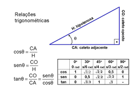
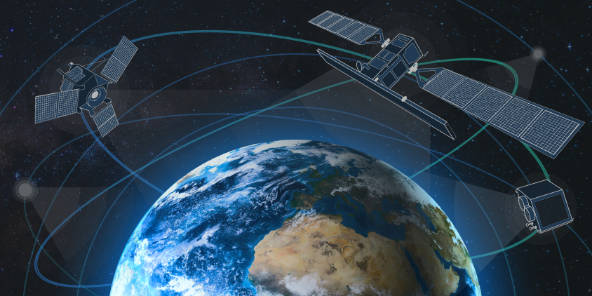
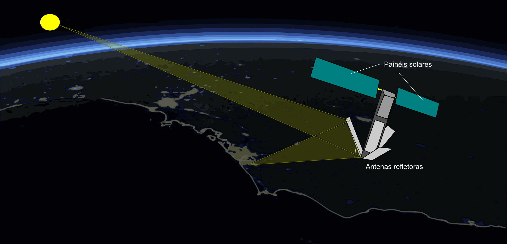

📐 O que é Trigonometria?

Relações trigonométricas em triângulos
A trigonometria é um ramo da matemática que estuda as relações entre ângulos e lados de triângulos.
Ela utiliza funções como seno, cosseno e tangente para calcular distâncias e posições.
Essa área é essencial em diversas tecnologias modernas, como engenharia, astronomia e, claro, sistemas de navegação.
🔗 Relação entre GPS e Trigonometria
 Representação da trilateração
Representação da trilateração
O GPS utiliza conceitos de trigonometria para calcular distâncias entre o receptor e os satélites.
A partir dessas distâncias, o sistema forma triângulos imaginários no espaço.
Esse processo é chamado de trilateração, onde a posição é encontrada pela interseção de esferas (ou círculos, em uma simplificação).
❓ Pergunta Central
Como a trigonometria é utilizada pelos sistemas de GPS para determinar a localização exata de uma pessoa na Terra?
🧭 Resposta da Pergunta Central

Funcionamento do GPS com satélites
A trigonometria é essencial para o funcionamento do GPS porque permite calcular a posição exata de uma pessoa na Terra a partir da medição de distâncias entre satélites e o receptor (como um celular).
Cada satélite envia um sinal com informações de tempo. Quando o receptor recebe esse sinal, ele calcula quanto tempo ele levou para chegar. Como o sinal viaja na velocidade da luz, é possível descobrir a distância entre o satélite e o dispositivo.
Com pelo menos três satélites, o sistema utiliza um método chamado trilateração, que forma figuras geométricas (como esferas ou triângulos) no espaço. A interseção dessas formas determina a posição exata do usuário.
A trigonometria entra nesse processo ao permitir calcular ângulos, distâncias e coordenadas no espaço tridimensional, garantindo que a localização seja precisa, mesmo em escala global.
Portanto, sem a trigonometria, não seria possível transformar os sinais dos satélites em uma localização exata no mapa.
🧠 Exemplo Teórico

Interseção de circunferências
Imagine três satélites no espaço. Cada um envia um sinal que permite calcular a distância até você.
Com essas três distâncias, formamos três circunferências. O ponto onde elas se cruzam indica sua posição.
📊 Exemplo Prático
Suponha que um satélite esteja a 20.000 km de você. Outro a 21.000 km e outro a 19.500 km.
Usando equações trigonométricas e sistemas de coordenadas, o GPS resolve esse sistema para encontrar sua localização exata.
Exemplo simplificado:
d = v × t
Onde:
d = distância
v = velocidade do sinal (velocidade da luz)
t = tempo que o sinal levou